First, I tested the MPU6050 using an Arduino Uno board. I chose Arduino Uno for the initial test because it is simple and stable to use, and the code can be uploaded quickly. This helped me check whether the sensor worked correctly and saved time during debugging.
I then held the MPU6050 in my hand and repeatedly lifted my arm quickly to simulate a walking motion. The acceleration changes in the vertical direction were recorded and visualized.

By observing how the values changed during walking-in-place simulation, it can be seen that when the sensor is stationary, the data fluctuation is very small. When sudden movement occurs, peak values appear. However, these peaks contain significant noise and are not sufficiently clean for direct use.
Data variation when stationary:
Data variation during movement:
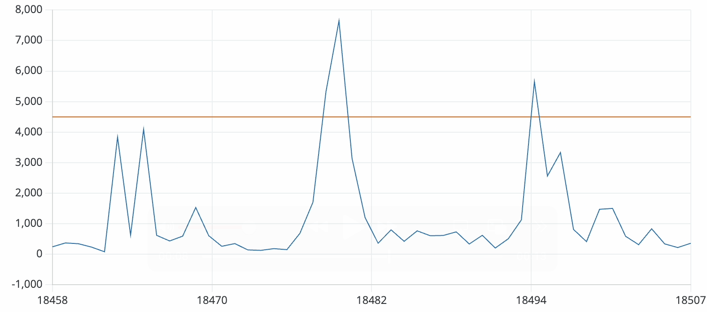I implemented two layers of noise reduction in the Arduino code.
1. Noise filtering
By using an alpha value of 0.9, exponential smoothing was applied to the data. This step effectively filtered out high-frequency jitter and noise.
2. Prevent multiple triggers using a time lock
Considering that the average adult walking speed is about 2.4–4 mph, which corresponds to approximately 110–125 steps per minute, I used the formula step frequency = 60000 / interval(ms). Based on this, I determined that setting unsigned long minStepInterval = 500 provides a stable threshold to prevent multiple false step detections.

Finally, I used a simulated step counter to test whether the sensor detection was accurate. The result was stable and reliable.
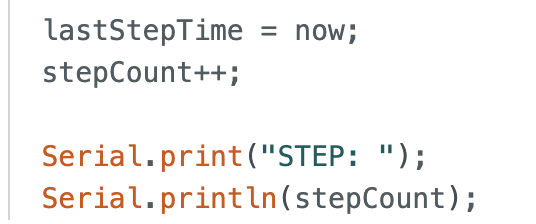
After confirming that the sensor worked correctly, I transferred the code to the ESP32. I used ESP32 because it has built-in WiFi and can connect to the same network as the Unity project. This allows real-time data communication between the hardware and the software.
1. Use WiFi AP mode
To enable data transmission, it is very important to ensure that the Arduino and Unity are under the same IP network. Since mobile signal is unavailable in many areas of Saclay and a mobile hotspot cannot be used, I chose to use the ESP32 in AP mode to provide a local network for the devices.
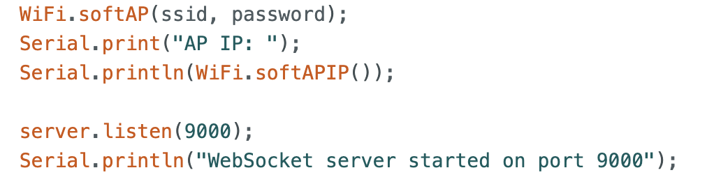2. Convert motion data into speed
In the previous tests on the Arduino Uno, the system could only detect each movement event, but this value could not be directly mapped to a usable movement speed. Therefore, I calculated the time interval between two movement events in Arduino and mapped this interval to speed: the shorter the interval, the faster the speed. I also applied smoothing again to prevent sudden changes in the data.
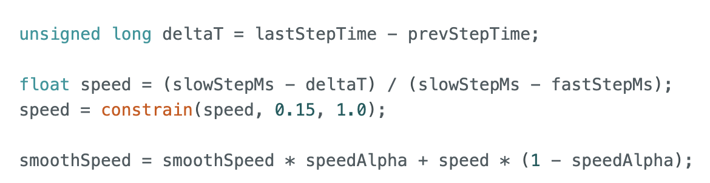Finally, I used WebSocket to send data from the ESP32 to Unity. In Unity, I created an empty GameObject called ESP32_manager to receive and process the data sent by the ESP32.
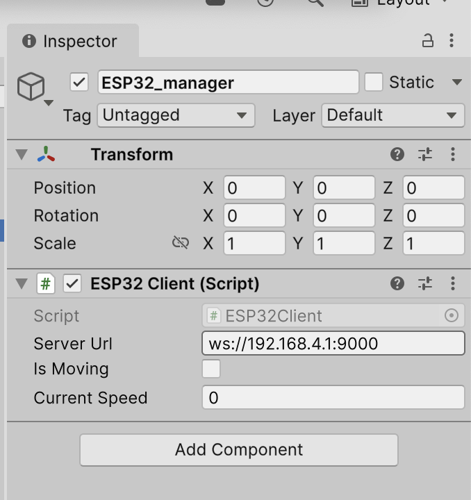Then, in Unity, I received the data sent by the ESP32 through the OVRCameraRig and used the user’s viewing direction as the forward movement direction.
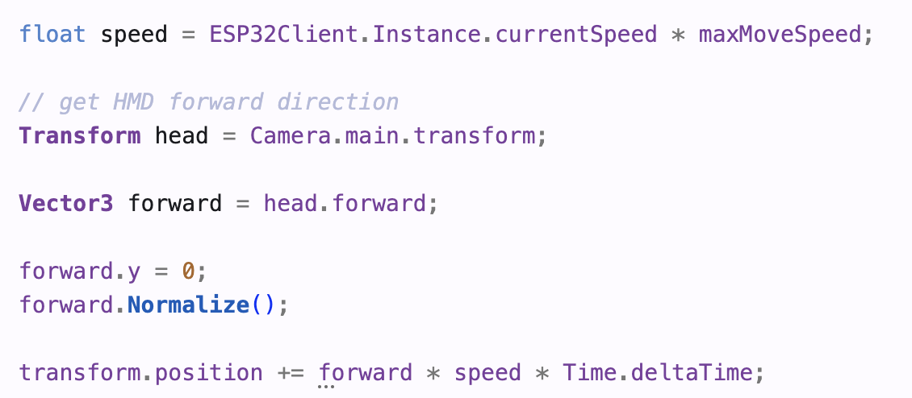During testing, I found that the character’s movement sometimes became jerky because the data was not sent continuously, causing sudden stops. To solve this, I added three values in the Arduino code: “MOVE_START”, “MOVE_UPDATE”, and “MOVE_STOP”. When the user starts moving, Arduino sends “MOVE_START” to Unity and the character begins to move. “MOVE_UPDATE” continuously updates the movement speed while the user is walking. When the user stops moving in real life for more than the stopTimeout (1000 ms), Arduino sends “MOVE_STOP”, and Unity then stops the character’s movement. This creates a short buffer before stopping, which helps reduce discomfort and prevents motion sickness.
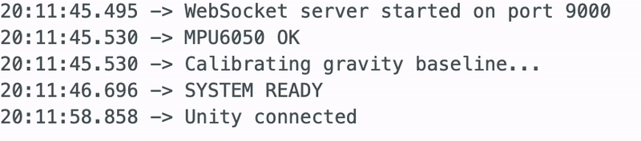
Since I do not have my own VR headset for testing, I borrowed a Quest 3S from a friend for one afternoon. After turning on developer mode on the Quest and connecting it to my MacBook, the device was successfully recognized. I clicked “Build and Run” in Unity, and the project was built successfully in about five minutes.
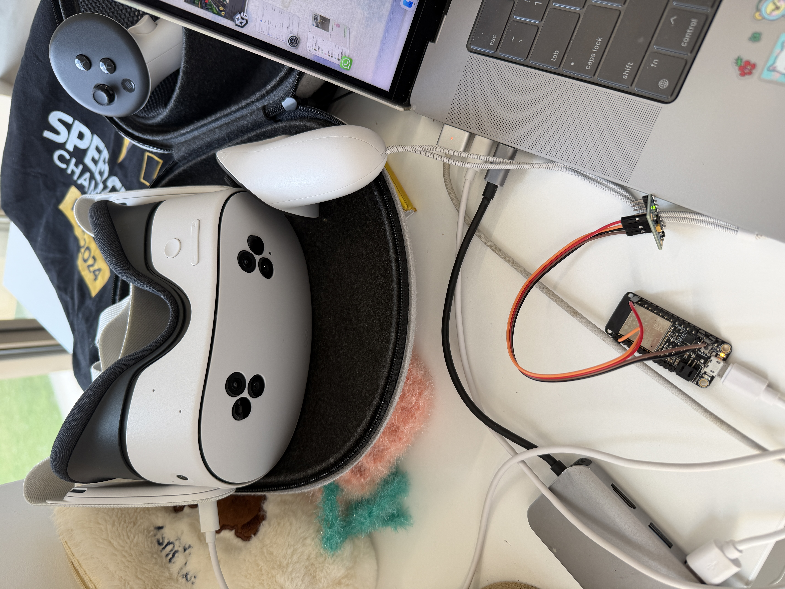 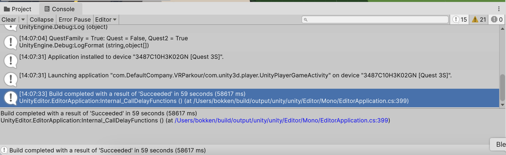During the initial test in the simulator, I found that when the character walked onto the slope in the second stage, the position on the Y axis could not follow the slope correctly. At first I used a Character Controller and tested the movement with WASD on a 3D map, and everything worked well. After that I added it to the OVRCameraRigInteraction. However, after running the scene, the trigger zones of each scene could not be activated.
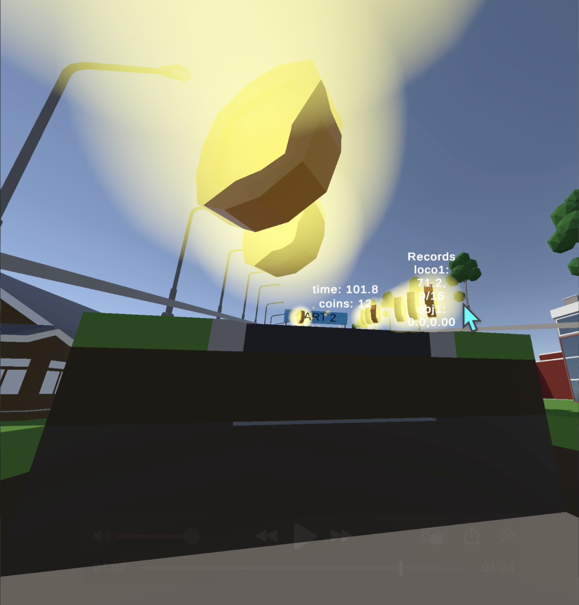After searching online, I learned that the Character Controller may override or ignore some colliders, so the object could not be detected by the trigger zones correctly.
After building the project on the Quest 3S, I found that the headset could not establish a connection with the WebSocket. In the Arduino console, the message “Unity connected” never appeared, which means the connection between Unity and ESP32 was not successfully established. However, due to limited time, I had to return the Quest headset. Therefore, I first needed to analyze the problem and find possible solutions before testing again in the next build.
I assume the most possible reason is that the ESP32 was running in AP (hotspot) mode, which may cause unstable network connection. On the Quest WiFi connection page, it always showed “no internet connection”. So I think that when the Quest headset connects to the WiFi provided by ESP32, the network may not be stable enough to support continuous WebSocket communication.
I saw a comment on a forum from a user named JakeMaier. He mentioned that WebSocket may have network permission issues on Quest 3, which could prevent successful communication.
This method is to test whether the AP hotspot mode causes unstable connection. By using a mobile hotspot with internet connection, I can check whether communication can work normally when both devices are connected to the same network.
As JakeMaier mentioned, if WebSocket is not compatible with Quest 3, then even if WiFi is connected, communication may still fail. He said that he successfully used MQTT to achieve communication, so this can be considered as the second direction to try.
I found a project on GitHub called “Bilateral Mixed Reality With Arduino”. This project uses a computer as a bridge instead of connecting Quest and ESP32 directly. It shows that Quest has no problem with HTTP communication. However, HTTP may be slower than WebSocket, and the data needs to go through ESP32 to the server and then to Quest, so the delay may be higher.
I saw a video on YouTube that connects ESP32 and Quest 3 using Bluetooth. However, I also saw many posts on the Arduino forum saying that Bluetooth connection may also have compatibility problems.
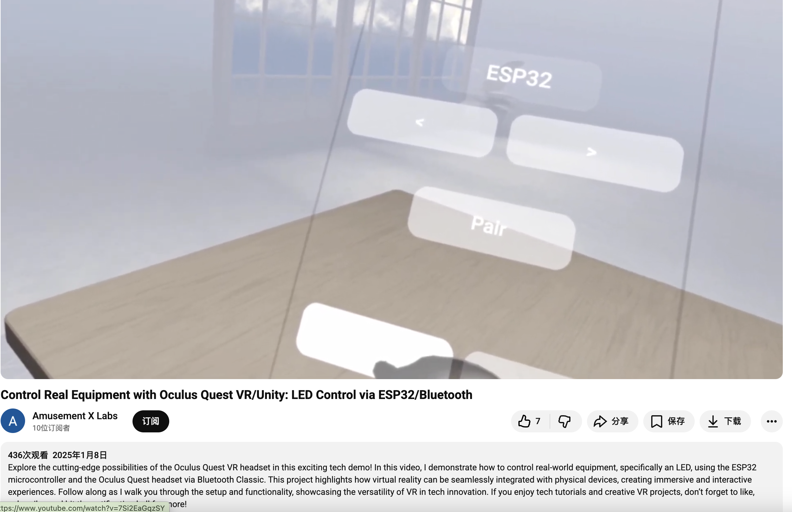During my research process, I unexpectedly discovered a series of studies about IMU by Sebastian OH Madgwick. In his paper “Recovering kinematic states of three degrees of freedom joints in open link chains, using accelerometers - a new method for human motion capture”, he pointed out that using IMU is a low-cost, low-power, and flexible method for motion capture. In this project (demo video), Sebastian not only achieved gait detection, but also tracked spatial coordinates and mapped them into a coordinate system. From a post on the Arduino forum, I learned that this result was achieved using MATLAB instead of Arduino. MATLAB provides powerful data processing and visualization capabilities. In the future, I would like to explore this direction further.
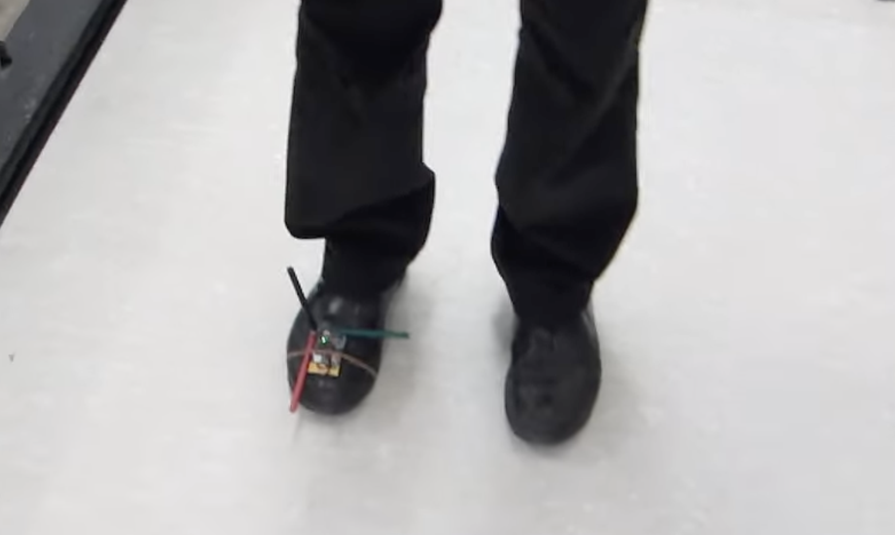 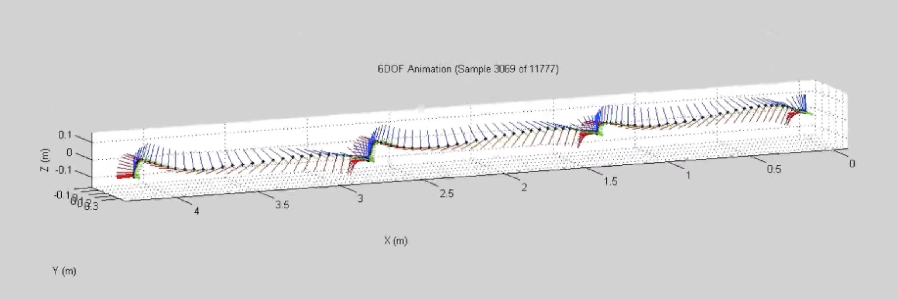